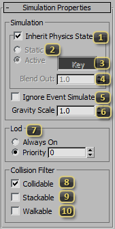
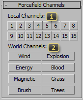

Node: Helpers: Physics
The SC2Physics Node, found in the Standard Helpers create panel, is used to assign physics properties to any node it is linked to. Any node with SC2Physics nodes linked to it would export as a rigid body physics object that can drive or be driven by the Domino Physics Engine in StarCraft II.
Shape Properties
The Shape Properties rollout is where shape type, dimension, and physical properties are defined.

Shape Type defines the geometry of the physic shape.
- Box is rectangular shape with height, length and width. It is useful for building and flat ground surfaces.
- Sphere is round ball shape and the cheapest to use performance wise.
- Capsule is basically a cylinder with two spherical ends. It is the second cheapest to use.
- Cylinder is an extruded circle that can be used for wheels, columns, etc.
- ConvexHull is a shape without any concave indents. ConvexHulls are auto-generated from user defined geometry.
- Mesh may have both convex and concave areas and thus can resemble the shape of any object the closest. However, it is very expensive performance wise.
Radius is used for the radius of Sphere, Capsule and Cylinder shape.
Height is used for the height of Box, Capsule and Cylinder shape.
Length is used for the Length of the Box shape.
Width is used for the width of Box shape.
Verts Count is the maximum number of vertices used when generating a Convex Hull. It is the max vertices before adjacent polygons are flattened which can add additional vertices.
Planar Angle is the maximum angle at which adjacent polygons are flattened into a single polygon when generating a Convex hull.
Pick Mesh is only enabled when the Shape Type is Convex Hull or Mesh. Once pressed, it allows selection of a geometry node to be used to generate the Convex Hull or as the Mesh. The selected geometry node is untouched, instead, its geometry is stored as an internal mesh by the SC2Physics node.
Add Mesh is only enabled after a mesh has already been defined via the Pick Mesh button. It allows appending of additional meshes.
Edit Custom Mesh is only enabled after a mesh has already been defined. When pressed, it turns the defined mesh into an EditablePoly which could be further altered. When changes are done, un-pressing this button would update the internal mesh.
Physics Materials from Heavy Metal, Bone, to Dirt, etc., can be chosen from this dropdown list. Each contains predefined physical material properties that describes how it should behave such as bounce, float, accelerate, etc... On impact, each type also triggers sound and effects unique to that material type.
Use Custom Mat Props, if enabled, allows overriding the default values from the selected Physics Material Type for this physics object. For instance, to get a more bouncy "Heavy Metal", choose "Heavy Metal" as the Physics Material Type, then enable "Use Custom Props Values" and increase the Restitution value.
Density is used to calculate the mass and buoyancy of an object. The higher this number is, the quicker an object accelerates and more difficult to stop. This also determines if and how much an object floats in liquids- the higher the number, the more it would float.
Friction dictates how easily two objects can slide along each other’s surface. When in contact with another surface, an object with higher friction would be more difficult to move and come to a stop faster.
Restitution determines if and how much a physics object bounces after impact. The higher the number, the more it would bounce.
Linear Damp is how quickly the velocity of an object decays. The higher the number, the faster an object slows down once there is no more force applied to it.
Angular Damp is how quickly the rotation of an object decays. The higher the number, the faster an object stops rotating once there is no more force applied to it.
Simulation Properties
Parameters in the Simulation Properties rollout defines how the physics object should behave within the physics system.
Inherit Physics State determines if the Physics State of this physics object is inherited from its parent. A physics object at the top of a hierarchy with "Inherit Physics State" enabled defaults to Active Kinematic.
Physics State is only enabled if the Inherit Physics State is off. The Physics State of a physics object can be Static, Active Kinematic, or Active Dynamic.
- Static physics objects do not move. They only exist to allow Dynamic objects to collide and hence react to them. It is the best performance and should be used whenever an object isn't meant to move such as the ground or buildings.
- Active physics objects can be either Kinematic or Dynamic, depending on their current Active State. A Kinematic physics object is not altered by the physics system but is used to push other Dynamic objects. On the other hand, the movement of a Dynamic physics object is solely determined by the physics system as a result of collision with Static, Kinematic, or other Dynamic physics objects.
Active State is an animatable value that can switch an Active Physics Object between Kinematic and Dynamic state at any time. A pressed-in "Key" button indicates the physics Object is Dynamic, otherwise it is Kinematic.
Blend Out Not yet implemented
Ignore Event Simulate causes this physics object to ignore "Simulate" events. A "Simulate" event is a way to force all Active Kinematic physics object within a model file to become Active Dynamic. In cases where an object should always be keyframed driven and push other physics object, this flag prevents it from becoming Dynamic when a "Simulate" event is triggered.
Gravity Scale defines how quickly an Active Dynamic physics object accelerates downwards toward the ground. Gravity is basically a constant force downwards.
Lod is used to limit the number of physics objects that are calculated by the Domino Physics Engine at any given time thus ensuring good frame rate. Basically, when good frame rate is at risk, only physics objects that are deemed necessary are simulated.
- Always On objects are always simulated regardless of frame rate.
- Priority, when enabled, allows a Priority number to be set. The higher the Priority number a physics object has, the more likely it would be simulated even when good frame rate is at risk.
Collidable, if checked, means that the physics object would interact with the terrain, Dynamic objects that are "Stackable", and static/Kinematic objects that are "Collidable".
Stackable, if checked, means that the physics object would interact with the terrain, Dynamic objects that are "Stackable"/"Collidable", and static/Kinematic objects that are "Collidable".
Walkable, if checked, allows units to path on it. This only influences pathing, an object with this enabled but not "Collidable" would still fall through the ground. A bridge, for instance, needs to be both "Collidable" and "Walkable" for units to walk on top of it.
Force Field Channels
The Force Field rollout is used to govern the interaction between SC2Force nodes and physics objects. These alter the movement a physics objects by pushing it around and making it react to the world around it.
Local Channels lists the mask for physics object/force interaction within a single m3 file. A physics object only interacts with SC2Force nodes that have at least one of the same channels enabled.
World Channels behave like Local Channels but across multiple m3 files. For example, a flag fluttering in the wind would be enlisted in the Wind channel, and a nuclear explosion would use the Wind channel as well. The result is that the explosion would push around the flag. If they were not both in wind, the flag would not move. This is for both artistic reasons and performance.